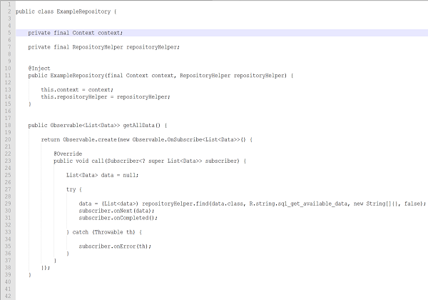
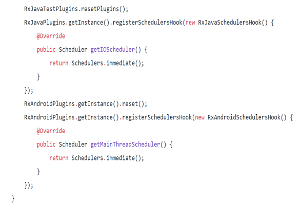
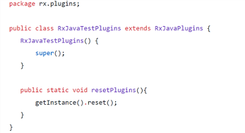

Testing Rxjava
Introduction
Unit testing asynchronous tasks can be inconvenient, tedious, or even difficult to people without any or little prior knowledge of Multi-threaded programming. However, there are multiple good tools and frameworks out there that abstract all or most of the technical details and provide simple interfaces for testing asynchronous events. I stumbled upon RxJava while working on a project during my internship this past summer. RxJava and RxAndroid were one of the main libraries used by the android team to build android apps during my internship. One thing I noticed immediately when writing tests was how different and in some ways difficult it was to write unit tests given the asynchronicity of RxJava and RxAndroid. So, I wanted to write this blog about testing the core components of RxJava and RxAndroid libraries - subscribers and observables. Let’s first look at what the library is.
What are RxJava and RxAndroid?
RxJava and RxAndroid are libraries that provide android developers with an API for writing clean and functional asynchronous code to manage background tasks. Two key components of these libraries are Observables and Subscribers. The way they work stems from the Observer pattern. The basic idea is to have the Observables asynchronously retrieve data from the repository layer of your software system while at the same time your subscribers, which most likely will be within presenter classes, will “subscribe” to the observable stream so that they can be notified by the observables to perform some side effects. For example, if the presenters need some stream of data from a database to display on a view, they can subscribe to an observable that gets the data from the repository layer and streams that data to the subscribers. This is one way of using Subscribers and Observables. To achieve this, the observables usually operate on a different thread, usually the IO thread, to that of the subscribers which operate on the main thread. This can make writing tests harder than usual.
Many common techniques of testing asynchronous code use things such as thread sleeps or CountDownLatch which can get a bit messy, especially when applied to RxJava. Fortunately, RxJava and RxAndroid provide us with more convenient tools to make testing easier.
For the remaining of the blog, we will assume we are working with the following presenter and repository classes:
The getAllData() method of the ExampleRepository class will utilize the repositoryHelper method to retrieve data from the database and return it as an observable. So, anything that subscribes to that observable will be able to get a continuous stream of data that fits the query.
Within the loadData() of the ExamplePresenter class above, we see that we are subscribing to the observable returned by the getAllData() method of the Example repository class. This means any steam of data the observable gets will be streamed to the presenter. The presenter will then pass that on to the view as shown above.
We’ll be using the above two classes to show how we can write regular Junit tests as well as write robolectric tests.
Testing Observables
Testing Observables is more straightforward than testing subscribers. This is because RxJava provides many ways for testing observables. The best way to achieve this is to use RxJava’s built in TestSubscriber class. Our goal when testing the getAllData() method is to make sure that the data being retrieved by the repository helper is being successfully sent to any subscribers. There are two ways to achieve this. One way is to use Mockito and mock the repository helper and use custom test data. The other way is to write Robolectric tests so that we will have a running app and have access to the database. Either way, we will have to use a TestSubscriber object to subscribe to the observable returned by the getAllData method. We will then use various methods of the testSubscriber object to see if it gets the right data.
We can perform assertions or analyze each received stream of event using TestSubscriber. So, we can not only test if the right data is received but also test for completion or unsubscribing as well.
Here is an image of what the test looks like:
Another way of testing Observables will look something like this:
This method works because it allows us to make the observable output synchronous.
Testing Subscribers
Testing subscribers is more difficult than testing observables because the subscribers run on a thread different from the unit test. So, the unit test has to manage the entire synchronization. Because the unit test runs on a different thread than that of the subscriber, one very common problem that happens when testing a subscriber is the unit test comes to a completion before the subscriber has completed receiving all the data from the observable. This means some assertions may fail simply because the unit test finished before there was any side effect.
However, RxJava provides a way to manipulate the execution such that subscribers always execute first. This forces the unit test to complete only when the subscriber’s onComplete method has been called. This is done by overriding the global schedulers for RxJava and RxAndroid with the ones that cause immediate execution. It is important that these are executed before any tests are executed. One way to achieve this is by placing the code in the method with @BeforeClass annotation so that this method is invoked before the test begins. So replace the default schedulers with either Schedulers.immediate() or Schedulers.trampoline().
If you’re using Robolectric, since the scheduler must be replaced before RxJava is initialied, the replacement must be done before super.onCreate() runs. The following piece of code will replace the default Schedulers:
In the above picture, RxJavaTestPlugins() rather than RxJavaPlugins.getInstance().reset() is called. This is because RxJavaPlugins.reset() is a package private method so we must create a class and place it inside of a package named rx.plugins.
When testing subscribers, you can use built in classes within RxJava to generate mock Observables Observable.just(), Observable.error(), or Observable.from().
Look at the picture below of the test for the getAvailableData() method of the presenter
Wrap up
Using RxJava can make writing unit tests more difficult than they usually are especially if you’re just starting to use RxJava. However, there are important tools that we can use provided by RxJava to make writing tests for classes using any component of RxJava a lot easier. So, in this blog, I have tried to highlight some of the ways testing of subscribers and observables can be made easier.